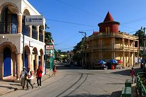
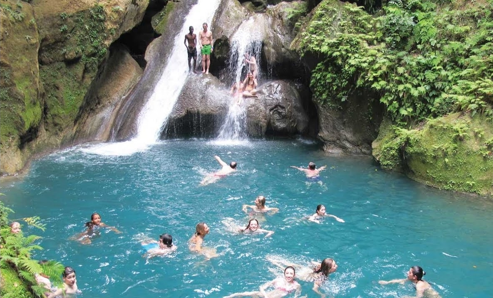
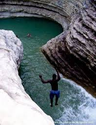
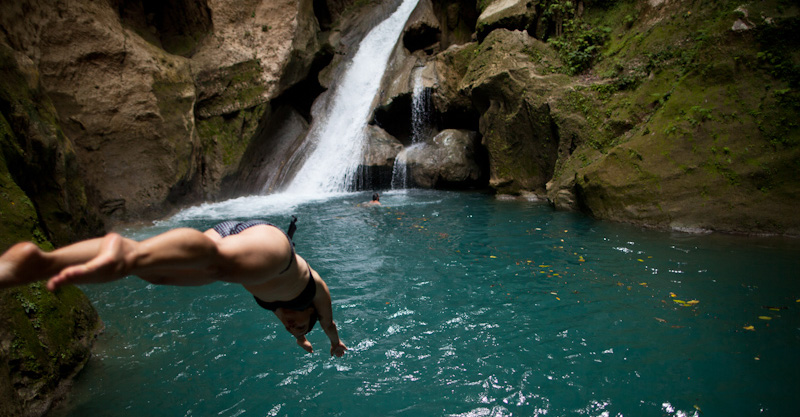
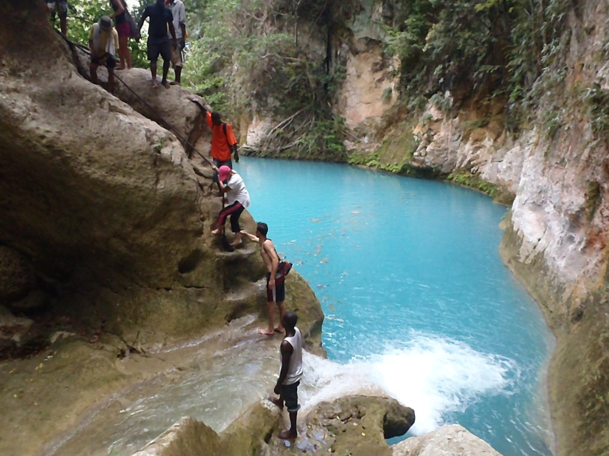

Jacmel (em crioulo, Jakmèl; também conhecida por seu nome indígena de Yaquimel), é uma comuna do Haiti, capital do departamento do Sudeste e no arrondissement de Jacmel. Fundada em 1698, Jacmel é considerada a capital cultural do Haiti, uma cidade quieta e simpática, situada na Baía da Ferradura.
De acordo com o censo de 2003, sua população total é de 26.077 habitantes.
A cidade não mudou muito desde o século XIX, quando a era lar de abastados comerciantes de café vivendo em graciosas mansões com menos estrutura de muitos em Nova Orleães; a arquitetura da cidade jacta-se em pilares de ferro fundido e galerias compradas na França. Hoje, muitas dessas casas são agora lojas de artesãos que vendem vibrantes artesanatos, máscaras de papel-machê e figuras de animais talhados em madeira.

Ultimamente, esforços tem sido feito para revitalizar o cigarro próspero e industrias de café. A cidade é o popular destino de turistas que decidem se aventura no Haiti devido a sua relativa tranquilidade e distância do recente tumulto político da capital.

Bassin Bleu, em crioulo haitiano Basenblé, é um sítio natural localizado a oeste da cidade de Jacmel, no departamento sudeste da República do Haiti. É uma série de bacias que se estendem ao longo da Petite Rivière de Jacmel. Para chegar lá, tome a direção de La Vallée de Jacmel, depois Bassin-Bleu. De um lugar chamado Bassin-Bleu, o caminho até o local é a pé.
   
"SEJA BEM VINDO A MINHA CIDADES"